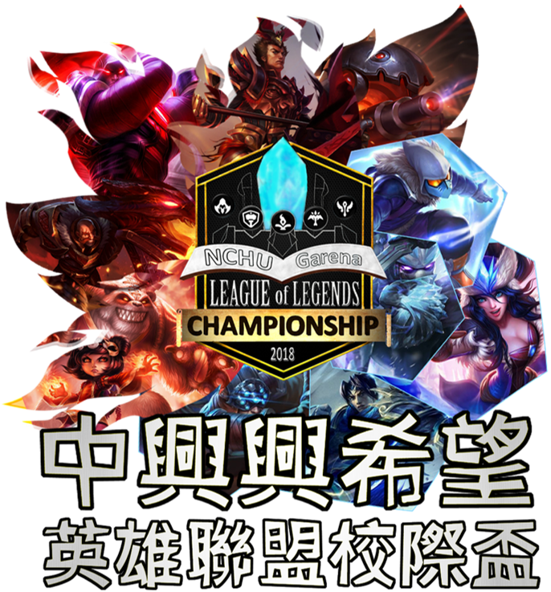
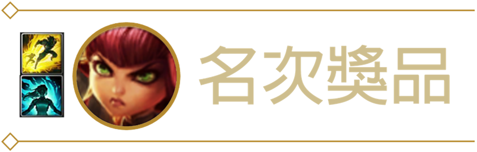
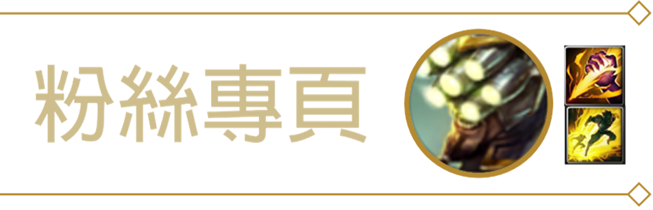
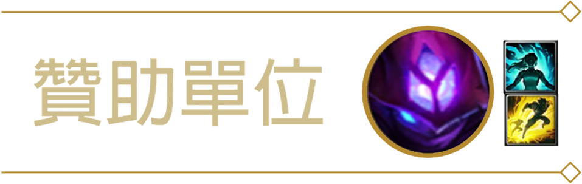
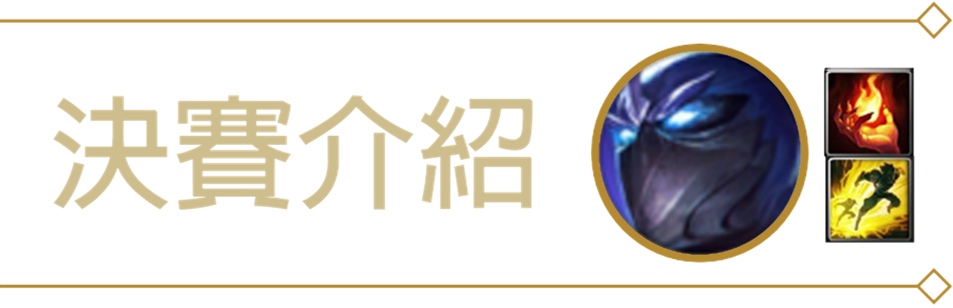

英雄聯盟正規賽(以下皆以16隊為基準)：
- 預賽採取小組循環賽模式，皆為線上賽，共分四組，組內將與其他隊伍進行一場BO1比賽，每組皆為四取二晉級。
- 八強賽採取單淘汰模式，皆為線上賽，共分四組，組內將其他隊伍進行依次BO3比賽，系列賽勝者晉級
- 四強賽採取單淘汰模式，皆為線上賽，共分四組，組內將其他隊伍進行依次BO3系列賽，系列賽勝者晉級
- 季殿賽採取單淘汰模式，為線上賽，將進行一次BO3系列賽，勝者為季軍
- 決賽採取單淘汰模式，為線下賽，決賽日期地點請觀看網站內部<決賽介紹>，將進行一次BO3系列賽，勝者為冠軍
英雄聯盟中單大賽(以下皆以16隊為基準)：
- 預賽採取單淘汰模式，皆為線上賽，共分八組，組內將進行一次BO1比賽，勝者晉級
- 八強賽採取單淘汰模式，皆為線上賽，共分四組，組內將其他隊伍進行一次BO1比賽，系列賽勝者晉級
- 四強賽採取單淘汰模式，皆為線上賽，共分四組，組內將其他隊伍進行一次BO1系列賽，系列賽勝者晉級
- 季殿賽採取單淘汰模式，為線上賽，將進行一次BO3系列賽，勝者為季軍
- 決賽採取單淘汰模式，為線下賽，決賽日期地點請觀看網站內部<決賽介紹>，將進行一次BO3系列賽，勝者為冠軍
英雄聯盟正規賽
- 比賽方法：5 對 5（團隊競賽，一隊5人）
- 比賽模式：Custom/Draft Mode(競賽模式)，藍紫隊，ban/pick順序由抽籤時一併決定。
- 比賽地圖：5 對 5 Summoner’s Rift (Summer) (召喚峽谷-夏)
- 比賽帳號:所有比賽選手均使用個人帳號。
- 比賽勝利判定標準：
- 摧毀敵方水晶主堡或迫使對方投降方獲勝。
- 雙方選手需於比賽開始前10分鐘至比賽現場檢錄，測試電腦，如隊伍遲到10分鐘，官方人員有權給予判此遲到的比賽隊伍棄權。
- 斷線處理：
- 中離或故意斷線：在裁判的判斷下，認為因選手的動作導致遊戲斷線，則判定該選手為輸的一方或繼續比賽。
- 如在對戰開始3分鐘內未發生首殺且雙方選手有一人產生斷線狀況，則官方人員有權決定比賽是否重新開始。
- 比賽開始3分鐘後發生當機狀況，比賽照常進行。請當機玩家儘快回復連線，回到遊戲中。
- 如選手故意離開遊戲，比賽照常進行。
- 不正當比賽行為如下：
- 使用任何外掛程式（如開啟全地圖）故意製造斷線 ，或使用不符合比賽規則的遊戲設定或Bug。
- 比賽進行中不允許任何非必要的聊天行為，如發送挑釁用語、任何違反運動家精神的行為、由官方人員認定任何不正當的訊息、明顯地讓對手贏得比賽等。
- 任何選手被發現進行不公平或不正當比賽時，當事選手在經過官方人員慎重裁決的情況下，將收到警告或判為輸方的處罰。在特別嚴重的情況下，將被逐出本次比賽。
英雄聯盟中路單挑大賽
- 比賽方法：1 對 1
- 比賽模式：Custom/Draft Mode(競賽模式)，藍紫隊，ban/pick順序由抽籤時一併決定。
- 比賽地圖：5 對 5 Summoner’s Rift (Summer) (召喚峽谷-夏)(僅使用中路及部分野區)
- 比賽帳號:所有比賽選手均使用個人帳號。
- 比賽勝利判定標準：
- 獲得首殺者勝利
- 吃兵數先達到100者勝利
- 首先摧毀敵方中路防禦塔者勝利
- 雙方選手需於比賽開始前10分鐘至比賽現場檢錄，測試電腦，如隊伍遲到10分鐘，官方人員有權給予判此遲到的比賽隊伍棄權。
- 斷線處理：
- 中離或故意斷線：在裁判的判斷下，認為因選手的動作導致遊戲斷線，則判定該選手為輸的一方或繼續比賽。
- 如在對戰開始3分鐘內未發生首殺且雙方選手有一人產生斷線狀況，則官方人員有權決定比賽是否重新開始。
- 比賽開始3分鐘後發生當機狀況，比賽照常進行。請當機玩家儘快回復連線，回到遊戲中。
- 如選手故意離開遊戲，比賽照常進行。
- 不正當比賽行為如下：
- 使用任何外掛程式（如開啟全地圖）故意製造斷線 ，或使用不符合比賽規則的遊戲設定或Bug。
- 比賽進行中不允許任何非必要的聊天行為，如發送挑釁用語、任何違反運動家精神的行為、由官方人員認定任何不正當的訊息、明顯地讓對手贏得比賽等。
- 任何選手被發現進行不公平或不正當比賽時，當事選手在經過官方人員慎重裁決的情況下，將收到警告或判為輸方的處罰。在特別嚴重的情況下，將被逐出本次比賽。
| 英雄聯盟正規賽 | 獎金 | 獎品 |
|---|---|---|
| 冠軍 | 1500 | 水晶獎盃一座+750聯盟幣/人 |
| 亞軍 | 1000 | 450聯盟幣/人 |
| 季軍 | 500 | 300聯盟幣/人 |
| 參加獎 | - | 幸運轉盤 |
| 英雄聯盟中單大賽 | ||
| 冠軍 | 500 | 750聯盟幣/人 |
| 亞軍 | 300 | 450聯盟幣/人 |
| 季軍 | - | 300聯盟幣/人 |
| 參加獎 | - | 幸運轉盤 |
中路單挑大賽
正規賽
本次比賽正規賽的費用為300/隊
中路單挑大賽的費用為50/人
本次賽事繳費主要是以匯款的方式
匯款帳戶：00214690256520
匯款完畢後請連絡粉絲專頁
若匯款上有困難，請私訊粉絲專頁
敬請期待，待報名結束會盡速公佈
Acer Predator
決賽地點：中興大學小禮堂
決賽時間：17：30入場，18：00開始
決賽流程：
| 時間 | 活動 | 備註 |
|---|---|---|
| 17：30 | 開放觀眾入場 | 入場時填寫抽獎卷 |
| 18：00~21：00 | 正規賽5V5 | 場跟場之間會有現場抽獎，視情況決定是否有賽後訪問。 |
| 21：00~21：45 | 中路單挑大賽 | |
| 21：45~22：00 | 頒獎 |


